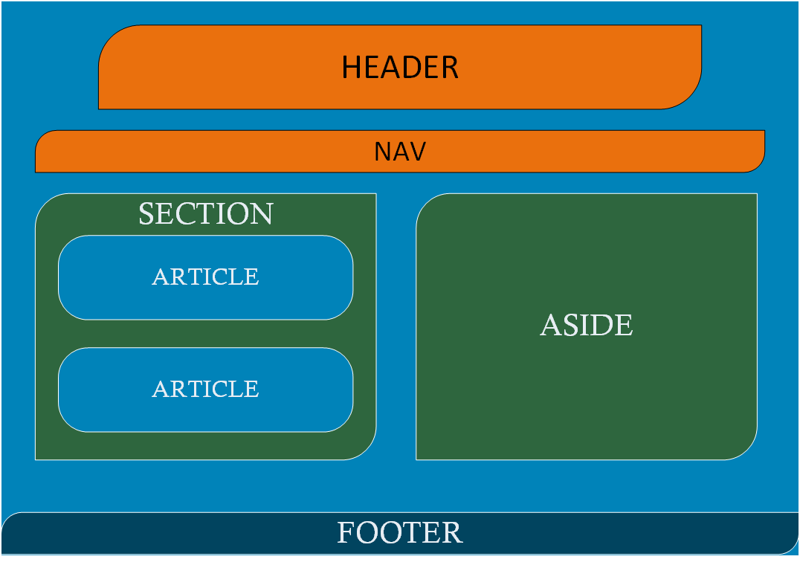
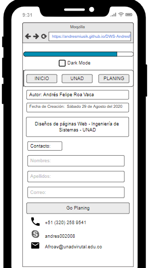
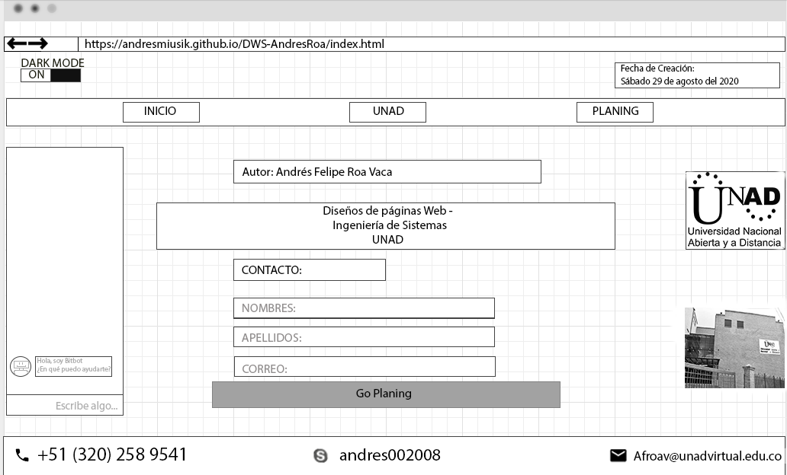

Unidad 1: Fase 2 - Diseño: Crear el Guión y la maquetación para un OVI
Nombre: Andrés Felipe Roa Vaca
Tema seleccionado: Estudiante 3: Contenido en HTML ( SECTION, ASIDE, FOOTER, ARTICLE)
a) Objetivo del sitio:
Objetivo General:
El objetivo de este sitio es utilizar las diferentes etiquetas para explicar el contenido HTML, como son los Section, Aside, Footer y Article.
Objetivos Específicos:
-
Generar un documento .html que describa el tema seleccionado
-
Identificar las diferencias de Section, Aside, Tooter y Article
-
Aprender a generar etiquetas de HTML5
b) Materiales:
Utilizaré una imagen hecha por mi sobre el modelo sencillo de un sitio web

Los sitios web tienen principalmente una etiqueta header que es donde suele ir la información principal. Una etiqueta Nav en dónde va una barra o zona de navegación entre el sitio web. Una etiqueta section que enfrasca una parte de la información relacionada del sitio con la etiqueta article donde ira la información de esa sección y para finalizar una etiqueta footer siendo el pie de página o el final del sitio para colcoar información generalmente de derechos de autor o contacto del sitio web
El mockup para mi sitio web seria de esta manera, tanto para navegadores en PC como en dispositivos moviles.
Mockup para celular

Mocrup para Navegadores

c) Contendio:
En la maquetación de HTML5 se carcteriza por dar a cada parte del documento y sus secciones un proposito especifico según la información, aqui es donde entran las etiquetas.
La semantica básica para una página web se divide en las etiquetas header, nav, sectión, article, aside y footer. Cada uno planea un lugar de la página según la información que se quiera plasmar.
Volver al inicio